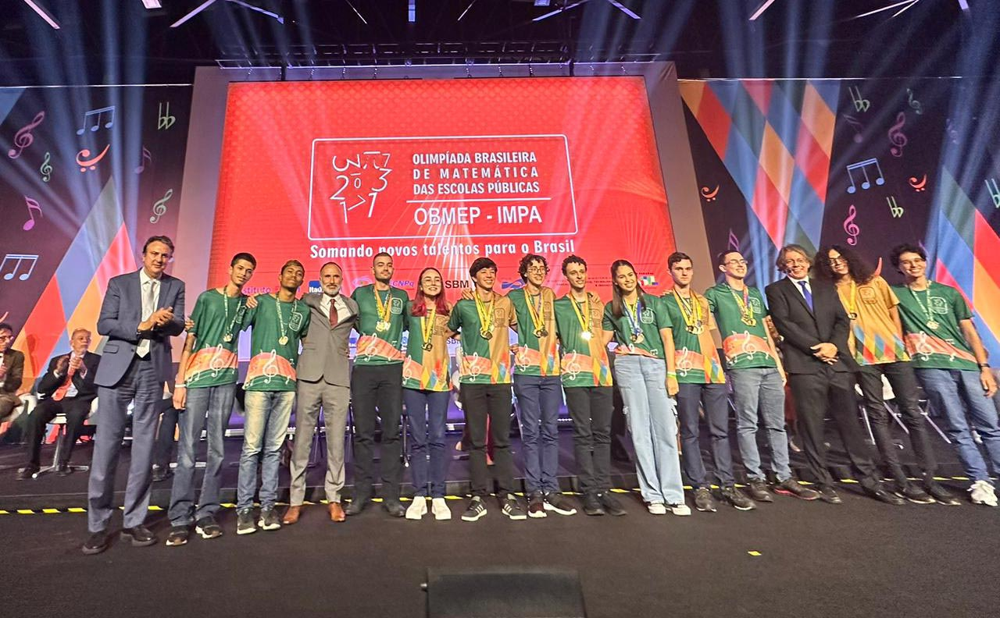

Olimpíada Brasileira de Matemática das Escolas Públicas (OBMEP)
A Olimpíada Brasileira de Matemática das Escolas Públicas - OBMEP é um projeto nacional dirigido às escolas públicas e privadas brasileiras, realizado pelo Instituto de Matemática Pura e Aplicada – IMPA e promovido com recursos do Ministério da Educação - MEC e do Ministério da Ciência, Tecnologia e Inovação - MCTI.
Como Funciona
A competição é dividida em duas etapas:
- Primeira Etapa: Consiste em uma prova objetiva, realizada em todas as escolas participantes. É uma prova com 20 questões de múltipla escolha, os 5% melhores de cada escola são classificados para segunda fase.
- Segunda Etapa: É uma prova dissertativa de 6 questões, realizada em polos de aplicação para os classificados da primeira etapa. É composta por questões que exigem respostas detalhadas e justificativas com correção dinâmica.
Os medalhistas de ouro são convidados a participar da cerimônia de premiação, onde são reconhecidos e premiados por seu desempenho.
São 120 pontos, 20 para cada questão. A nota de corte para cada premiação varia, mas geralmente são 100 pontos para ouro, 80 para prata, 60 para bronze e 40 para menção honrosa.
Lembrando que a prova é dividida em 3 níveis, nível 1 (6º e 7º ano), nível 2 (8º e 9º) e nível 3 (ensino médio). São 500 medalhas de ouro para nível 1, 500 para nível 2 e 100 para nível 3. Já em escolas particulares será 150 medalhas de ouro para nível 1, 150 para nível 2 e 50 para nível 3.
Galeria

Medalhas

Premiação